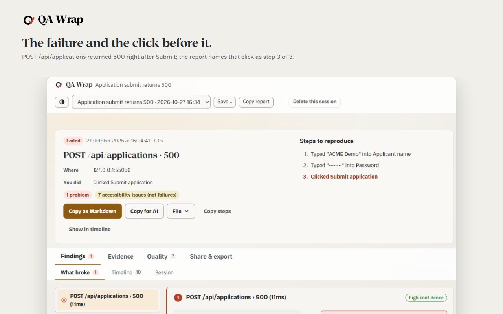
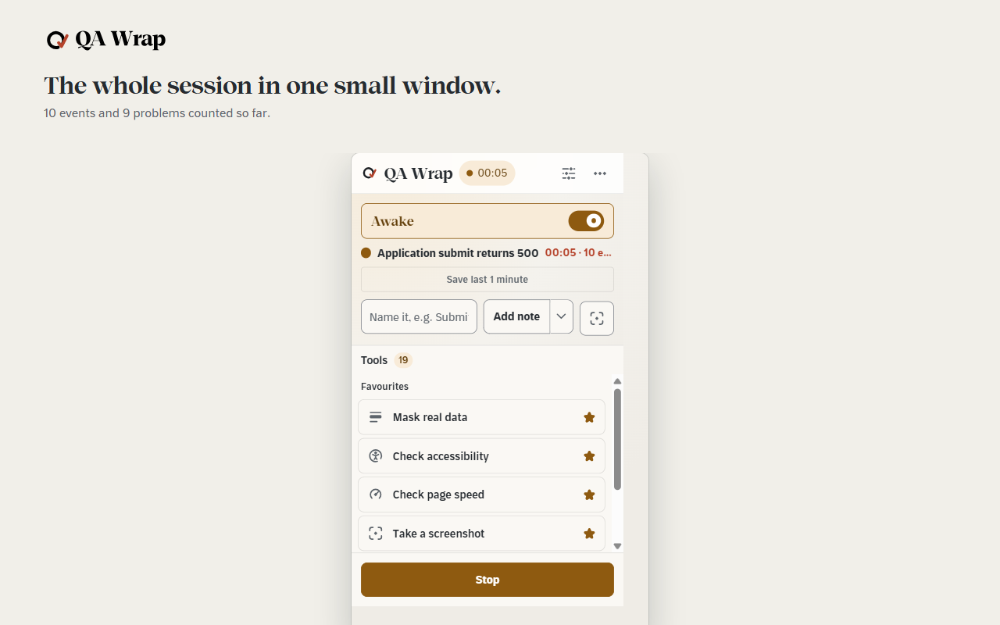
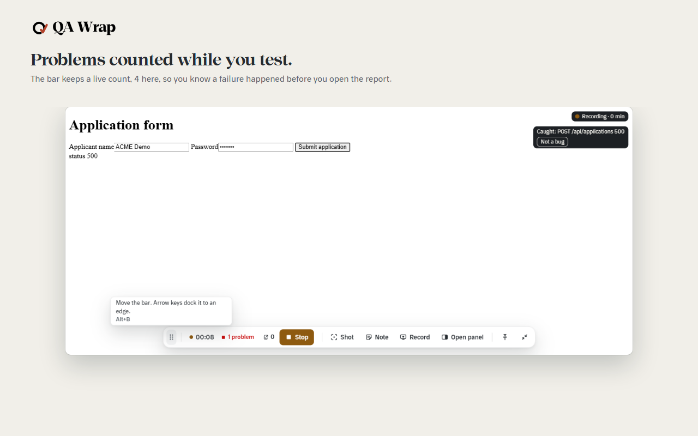
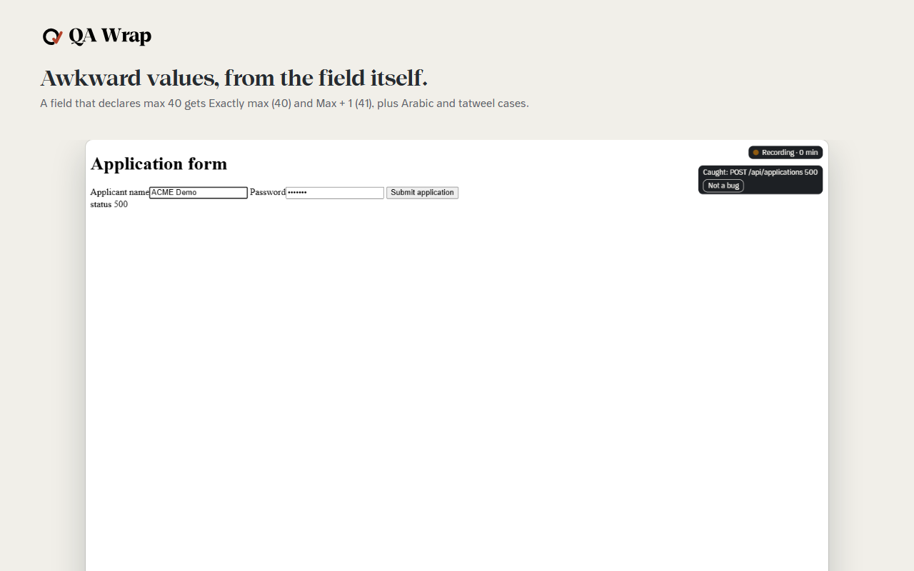
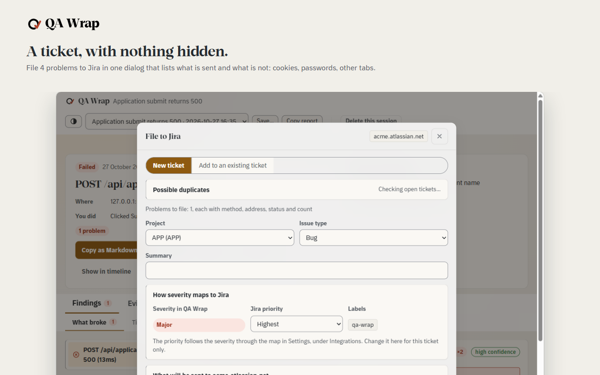
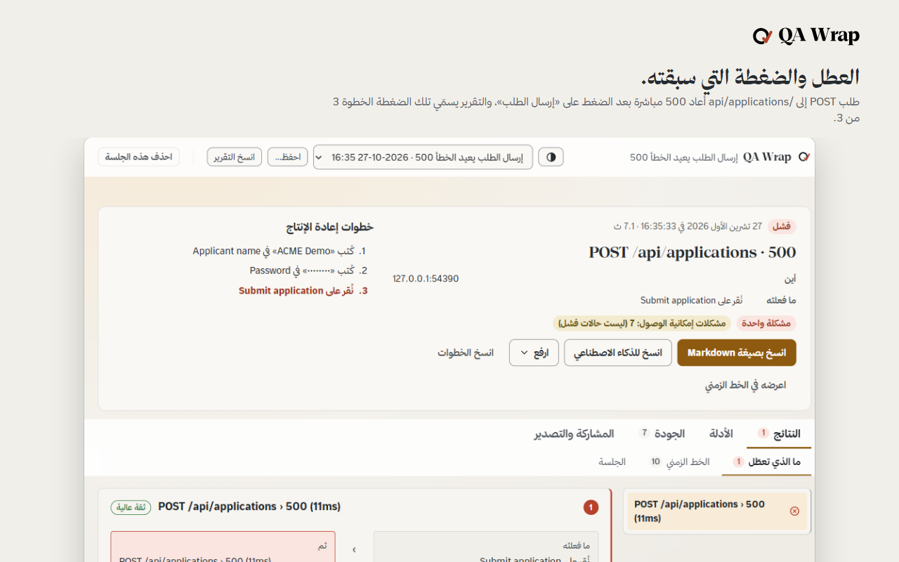
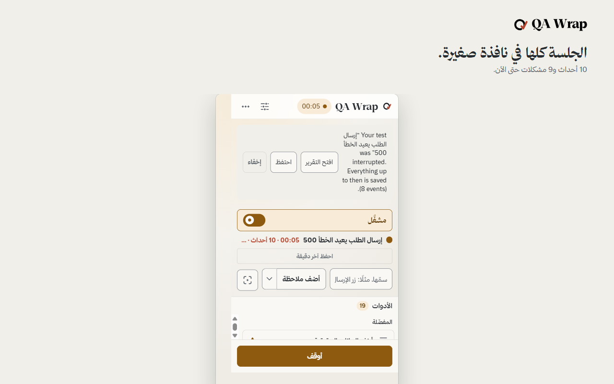
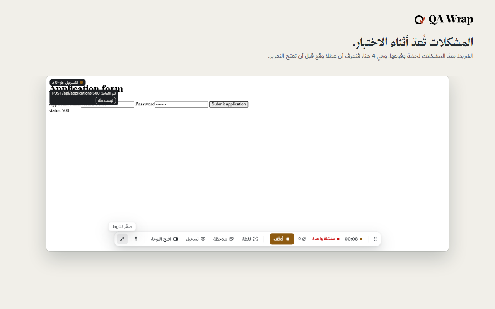
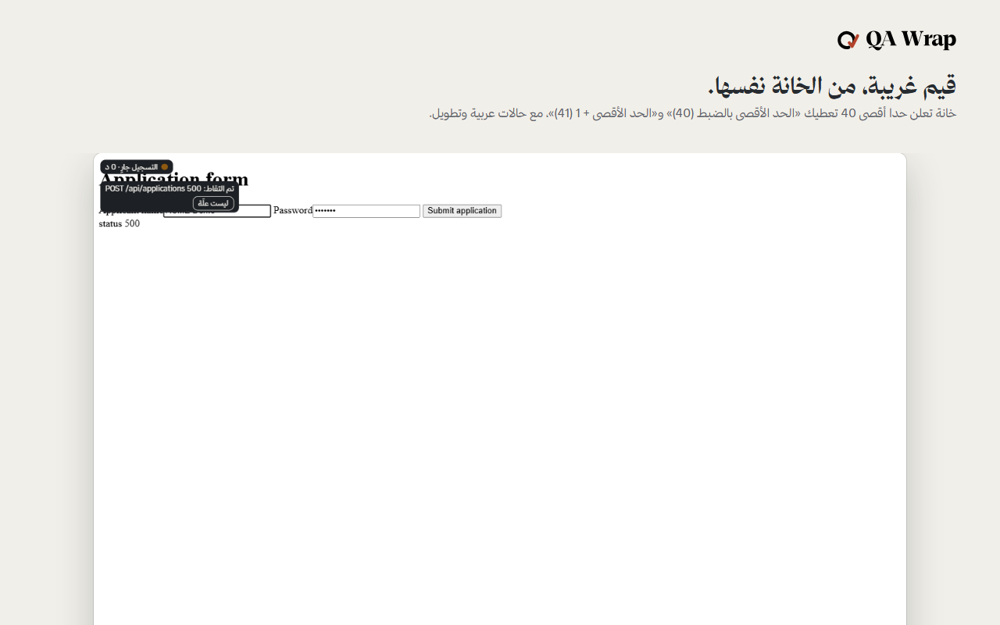
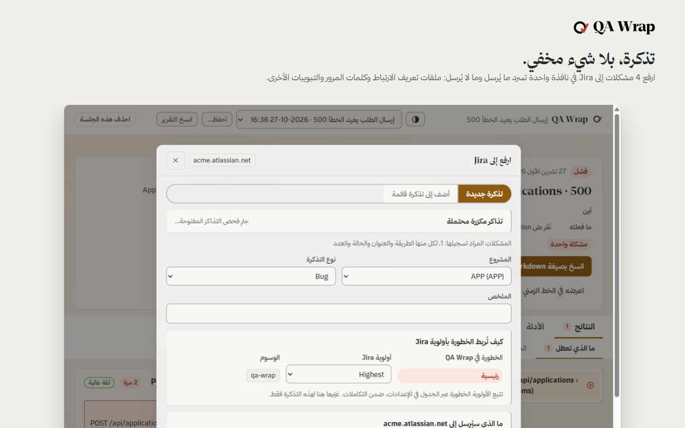

QA-Wrap: record a test session, get the bug report
Every failure, traced.
A free, open-source bug report extension for QA testers. No account and no server.
Free, MIT licence. English and Arabic. Chrome installs from the release zip, Edge from Microsoft Edge Add-ons. Firefox and Opera are in review.
QA-Wrap: سجّل جلسة الاختبار، واحصل على تقرير الخلل
كل عطل، متتبع.
إضافة متصفح مجانية ومفتوحة المصدر لكتابة تقارير الأخطاء، لمختبري الجودة. بلا حساب وبلا خادم.
مجانية برخصة MIT، بالعربية والإنجليزية. تُثبَّت في Chrome من ملف الإصدار المضغوط، وفي Edge من متجر إضافات Microsoft Edge. وFirefox وOpera قيد المراجعة.
Three things, in this order
Record a session
Wake it in your test window and press Start. It keeps your clicks, typing, requests and console output.
More detail
Wake it in the window you are testing, name the charter, press Start. From then on it keeps your clicks, typing, form steps and navigations, with a locator for each element you touched, alongside the page's own network requests and console output, across every tab in that window. It stays asleep in every window you did not wake.
Every failure linked to its click
Each failure sits next to the click that caused it, with the gap in milliseconds.
More detail
When a request fails or the console throws, the report puts the action immediately before it next to the failure, with the gap between them in milliseconds and how confident the match is. The chain is built while you test, not reconstructed afterwards from a video and your memory of what you pressed.
Filed as a report you hand over
Press Stop and the report is written. File it to Jira or take it out as files.
More detail
Press Stop and it is written: a headline, the cause and effect chain, the screenshots and recordings, the accessibility and page speed findings, and a timeline you can scrub. Take it out as a defect report or a test case to ISO/IEC/IEEE 29119-3, a Playwright page object with locators verified against the page, a Postman collection, JUnit, HAR, Excel, Markdown or JSON. Or file it into Jira, GitHub, Linear, Trello, ClickUp or Asana, once you have set that up and pressed the button. It can also be handed over as a record of the session: filed to Jira, a tracker or a chat, or saved as files in a folder you choose.
ثلاثة أمور، بهذا الترتيب
سجل جلسة
أيقظها في نافذة الاختبار واضغط ابدأ. تحفظ نقراتك وما تكتبه والطلبات ومخرجات وحدة التحكم.
تفاصيل أكثر
أيقظها في النافذة التي تختبرها، سم ميثاق الاختبار، ثم اضغط ابدأ. من تلك اللحظة تحفظ الأداة نقراتك، وما تكتبه، وخطوات النماذج، والتنقلات، مع محدد لكل عنصر لمسته، إلى جانب طلبات الشبكة الخاصة بالصفحة نفسها ومخرجات وحدة التحكم، عبر كل تبويب في تلك النافذة. وتبقى نائمة في أي نافذة لم توقظها.
كل عطل مرتبط بنقرته
يوضع كل عطل بجانب النقرة التي تسببت فيه، مع الفارق بالمللي ثانية.
تفاصيل أكثر
حين يفشل طلب أو تلقي وحدة التحكم خطأ، يضع التقرير الإجراء السابق مباشرة بجانب العطل، مع الفارق الزمني بينهما بالمللي ثانية ومدى الثقة بهذا الربط. تبنى السلسلة أثناء اختبارك، لا بإعادة تركيبها لاحقا من فيديو وذاكرتك عما ضغطته.
يودع تقريرا تسلمه
اضغط أوقف فيكتب التقرير. أودعه في Jira أو أخرجه في ملفات.
تفاصيل أكثر
اضغط أوقف ويكتب التقرير: عنوان، وسلسلة السبب والأثر، ولقطات الشاشة والتسجيلات، ونتائج إمكانية الوصول وسرعة الصفحة، وخط زمني يمكنك تصفحه. أخرجه تقرير عطل أو حالة اختبار وفق ISO/IEC/IEEE 29119-3، أو كائن صفحة Playwright بمحددات تحققت من الصفحة، أو مجموعة Postman، أو JUnit، أو HAR، أو Excel، أو Markdown، أو JSON. أو أودعه في Jira أو GitHub أو Linear أو Trello أو ClickUp أو Asana، متى أعددت ذلك وضغطت الزر. ويمكن تسليمه سجلا للجلسة: يرفع إلى Jira أو أداة تتبع أو محادثة، أو يحفظ ملفات في مجلد تختاره.
Watch the 40-second film
شاهد الفيلم في 40 ثانية
What you are looking at






ما الذي تراه





Nothing leaves your computer until you send it to Jira or a tracker.
- There is no QA-Wrap server.
- Sessions and recordings stay in your browser profile.
- No analytics, no crash reports, no remote code.
The full detail
There is no QA-Wrap server, and the only destinations are the Jira site, tracker or webhook you configure. Sessions, screenshots and recordings are written to IndexedDB inside your own browser profile. The extension makes no request of its own, carries no analytics and no crash reporting, and loads no remote code; the accessibility engine is bundled in the package.
Data leaves only when you configure Jira, a tracker or a webhook in Settings and press a button that names where it is going. Password fields and cookie values are not written into a session or an export, and you can mask anything on the page by hand, with an opaque block that holds through every screenshot and every navigation for the rest of the session.
Finished sessions are deleted after 30 days by default, media included. The whole policy, including the standards each control answers to, is on the privacy page.
لا شيء يغادر جهازك حتى ترسله إلى Jira أو أداة تتبع.
- لا يوجد خادم لـ QA-Wrap.
- الجلسات والتسجيلات تبقى في ملف متصفحك الشخصي.
- بلا تحليلات ولا تقارير أعطال ولا شيفرة عن بعد.
التفاصيل كاملة
لا يوجد خادم لـ QA-Wrap، ولا وجهة سوى موقع Jira أو أداة تتبع أو ويب هوك تعدها أنت. تكتب الجلسات ولقطات الشاشة والتسجيلات في قاعدة بيانات IndexedDB داخل ملف متصفحك الشخصي. لا ترسل الأداة أي طلب من عندها، ولا تحمل أي تحليلات ولا تقارير أعطال، ولا تحمل أي شيفرة عن بعد؛ محرك إمكانية الوصول مدمج داخل الحزمة.
لا تغادر البيانات إلا حين تعد Jira أو أداة تتبع أو ويب هوك في الإعدادات وتضغط زرا يسمي إلى أين تذهب. لا تكتب حقول كلمات المرور ولا قيم الكعكات (cookies) في جلسة أو ملف مصدر، ويمكنك إخفاء أي شيء في الصفحة يدويا، بكتلة معتمة تبقى ثابتة عبر كل لقطة شاشة وكل تنقل حتى نهاية الجلسة.
تحذف الجلسات المنتهية بعد 30 يوما افتراضيا، بما فيها الوسائط. السياسة كاملة، بما في ذلك المعايير التي يستجيب لها كل ضابط، على صفحة الخصوصية.
QA-Wrap compared with Jam, Marker.io, BugHerd and Bird Eats Bug
All five report a bug from the browser. They differ in what it costs to start, whether you can read the code, and where the recording lives.
| Tool | Cost to start | Source code | Where the recording lives |
|---|---|---|---|
| QA-Wrap | Free, no account | Open (MIT) | Your browser, until you send it to Jira, a tracker or a webhook |
| Jam | Free plan, paid plans | Not open source | Jam’s cloud |
| Marker.io | Trial, then paid | Not open source | Marker.io’s cloud |
| BugHerd | Trial, then paid | Not open source | BugHerd’s cloud |
| Bird Eats Bug | Free plan (15 uploads a month), paid plans | Not open source | Bird Eats Bug’s cloud |
Pick a hosted tool when your team wants share links anyone can open. Pick QA-Wrap when the recording has to stay on the tester’s machine, or when you want to read and change the code.
QA-Wrap مقارنة مع Jam وMarker.io وBugHerd وBird Eats Bug
الأدوات الخمس تبلّغ عن الخلل من المتصفح، وتختلف في كلفة البدء، وفي إمكانية قراءة الشيفرة، وفي مكان حفظ التسجيل.
| الأداة | كلفة البدء | الشيفرة المصدرية | أين يُحفظ التسجيل |
|---|---|---|---|
| QA-Wrap | مجانية، بلا حساب | مفتوحة (MIT) | في متصفحك، حتى ترسله إلى Jira أو أداة تتبع أو ويب هوك |
| Jam | خطة مجانية وخطط مدفوعة | مغلقة المصدر | سحابة Jam |
| Marker.io | فترة تجربة ثم اشتراك مدفوع | مغلقة المصدر | سحابة Marker.io |
| BugHerd | فترة تجربة ثم اشتراك مدفوع | مغلقة المصدر | سحابة BugHerd |
| Bird Eats Bug | خطة مجانية (15 رفعًا في الشهر) وخطط مدفوعة | مغلقة المصدر | سحابة Bird Eats Bug |
اختر أداة مستضافة حين يريد فريقك روابط مشاركة يفتحها أي شخص. واختر QA-Wrap حين يجب أن يبقى التسجيل على جهاز المختبِر، أو حين تريد قراءة الشيفرة وتعديلها.
Nineteen tools, in four groups
- Capture4Capture the evidence.
- Check5Let the machine check what it can.
- Design8Design the values worth trying.
- Break2Break things on purpose.
Show the table
| Group | Tool | What it does |
|---|---|---|
| Capture | Photograph the page | Photograph the page and keep it with the session. |
| Record the screen | Film this tab, or the whole screen, into a video kept with the session. | |
| Check another size | Open this same page again in a real window at a phone, tablet or laptop size. | |
| Mask real data | Cover anything on the page so it never reaches a picture, a video or the report. | |
| Check | Check accessibility | List what would stop somebody using this page with a screen reader or a keyboard. |
| Check page speed | Measure how fast this page really drew and answered, logged in and mid-flow. | |
| Check the links | Ask every link on the page whether it still answers. | |
| Measure code coverage | Measure which of this page's own JavaScript actually ran while you used it. | |
| Check the fine print | Check the legal surface of the page: policies, consent, trackers, who is behind it. | |
| Design | Design the values | Point at a field and get the handful of values worth testing, and why each one. |
| Try nasty values | Point at any field and get the awkward values built for that exact field. | |
| Fill the form | Fill every field at once with a value a tester would have chosen, and name what it could not. | |
| Harvest the page | Read every control on the page into a page object a test suite can use. | |
| Copy a locator | Point at anything and get the one line of code a test needs to find it again. | |
| Draw the flow | Turn what you just did into a workflow diagram on one page. | |
| Reverse-engineer the spec | Read this page back as a draft specification, in Arabic and English. | |
| Send a request | Call the site's own API as the user who is logged in, without copying a token into another app. | |
| Break | Break a request | Make the site fail on purpose, then stop it failing without reloading anything. |
| Stress the layout | Flip the page right-to-left and lengthen every label, the way a translation would. |
تسع عشرة أداة، في أربع مجموعات
- التقاط4التقط الدليل.
- الفحص5دع الآلة تفحص ما تستطيعه.
- التصميم8صمم القيم الجديرة بالتجربة.
- الإخلال2أخل بالأمور عمدا.
اعرض الجدول
| المجموعة | الأداة | ما تفعله |
|---|---|---|
| التقاط | التقط صورة للصفحة | التقط صورة للصفحة واحتفظ بها مع الجلسة. |
| سجل الشاشة | صور هذا التبويب، أو الشاشة كاملة، في مقطع فيديو يحفظ مع الجلسة. | |
| جرب مقاسا آخر | افتح الصفحة نفسها من جديد في نافذة حقيقية بمقاس هاتف أو جهاز لوحي أو حاسوب محمول. | |
| أخف البيانات الحقيقية | غط أي عنصر في الصفحة حتى لا يصل إلى صورة أو فيديو أو التقرير. | |
| الفحص | افحص إمكانية الوصول | اعرض ما قد يمنع شخصا من استخدام هذه الصفحة بقارئ الشاشة أو لوحة المفاتيح. |
| افحص سرعة الصفحة | قس سرعة رسم هذه الصفحة واستجابتها فعليا، عند الدخول وفي منتصف العملية. | |
| افحص الروابط | اسأل كل رابط في الصفحة إن كان لا يزال يستجيب. | |
| قس تغطية الشيفرة | قس أي جزء من شيفرة هذه الصفحة نفذ فعليا أثناء استخدامك لها. | |
| افحص الشروط الدقيقة | افحص الجانب القانوني للصفحة: السياسات، والموافقة، وأدوات التتبع، ومن يقف خلفها. | |
| التصميم | صمم القيم | أشر إلى حقل واحصل على مجموعة القيم الجديرة بالاختبار، ولماذا اختيرت كل قيمة. |
| جرب قيما خبيثة | أشر إلى أي حقل واحصل على القيم الصعبة المصممة لذلك الحقل بالتحديد. | |
| املأ النموذج | املأ كل حقل دفعة واحدة بقيمة كان سيختارها مختبر، مع تسمية ما تعذر ملؤه. | |
| احصد الصفحة | اقرأ كل عنصر تحكم في الصفحة في كائن صفحة تستخدمه مجموعة اختبارات. | |
| انسخ محدد عنصر | أشر إلى أي عنصر واحصل على سطر الشيفرة الذي يحتاجه الاختبار ليجده مرة أخرى. | |
| ارسم مخطط سير العمل | حول ما فعلته للتو إلى مخطط سير عمل في صفحة واحدة. | |
| استخرج المواصفة | اقرأ هذه الصفحة من جديد بوصفها مسودة مواصفة، بالعربية والإنجليزية. | |
| أرسل طلبا | ناد واجهة برمجة تطبيقات الموقع نفسه بصفتك المستخدم المسجل دخوله، من دون نسخ رمز دخول إلى تطبيق آخر. | |
| الإخلال | عطل طلبا | اجعل الموقع يفشل عمدا، ثم أوقف الفشل من دون إعادة تحميل أي شيء. |
| اختبر التخطيط تحت الضغط | اقلب اتجاه الصفحة إلى اليمين، وأطل كل تسمية كما تفعل الترجمة. |
Download and install
Get QA-Wrap
- FirefoxIn review
- Chrome (from the release zip)Live
- EdgeLive
- OperaIn review
- npm: MCP bridgeLive
- Official MCP RegistryLive
Chrome Web Store: not listed, so Chrome users install from the release zip.
- Open the latest release and download the zip for your browser. Unzip it to a folder you will keep.
- Open the browser's extensions page, turn on Developer mode, press Load unpacked and choose the folder. You do this once.
- Updates are automatic after that: QA-Wrap checks the release list once a day and offers the new version with one press.
Two packages, one codebase
The content scripts, the interface, the exporters and the ISTQB model are identical in both. Only the manifest differs, and only where an engine forces it.
| Browser | Engine | What you get |
|---|---|---|
| Chrome | Chromium | The reference build. Every suite runs against this one. |
| Edge | Chromium | Identical to the Chrome build. Listed separately because the store is. |
Source and help
The source, the build commands and the tests are in the repository. Something went wrong? The support page says what to send. Try it first on the practice page.
Privacy, terms and licence
Read the privacy policy and the terms. QA-Wrap is released under the MIT licence; third-party components keep their own licences.
التنزيل والتثبيت
احصل على QA-Wrap
- Firefoxقيد المراجعة
- Chrome (من ملف الإصدار)متاح
- Edgeمتاح
- Operaقيد المراجعة
- npm: جسر MCPمتاح
- سجل MCP الرسميمتاح
متجر Chrome: غير مدرج، فيثبّت مستخدمو Chrome من ملف الإصدار.
- افتح آخر إصدار ونزّل ملف zip الخاص بمتصفحك، ثم فك ضغطه في مجلد تحتفظ به.
- افتح صفحة الإضافات في المتصفح، فعّل وضع المطوّر، واضغط تحميل إضافة غير معبأة واختر المجلد. تفعل ذلك مرة واحدة.
- بعد ذلك تأتي التحديثات تلقائيا: يفحص QA-Wrap قائمة الإصدارات مرة في اليوم ويعرض الإصدار الجديد بضغطة واحدة.
حزمتان، قاعدة شيفرة واحدة
النصوص البرمجية المدرجة في الصفحة، والواجهة، ووحدات التصدير، ونموذج ISTQB متطابقة في الحزمتين. يختلف فقط ملف الإعلان (manifest)، وفقط حيث يفرض المحرك ذلك.
| المتصفح | المحرك | ما تحصل عليه |
|---|---|---|
| Chrome | Chromium | النسخة المرجعية. كل مجموعة اختبارات تعمل على هذه النسخة. |
| Edge | Chromium | مطابقة لنسخة Chrome. مدرجة على حدة لأن المتجر يفعل ذلك. |
المصدر والمساعدة
الشيفرة وأوامر البناء والاختبارات في المستودع. حدث خطأ؟ صفحة الدعم تقول ما ترسله. جرّبها أولًا في صفحة التدريب.
الخصوصية والشروط والرخصة
اقرأ سياسة الخصوصية والشروط. QA-Wrap منشورة برخصة MIT، وتحتفظ المكونات الخارجية برخصها.